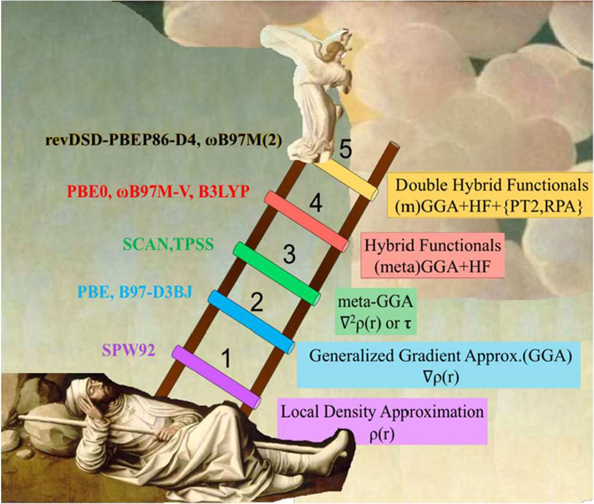
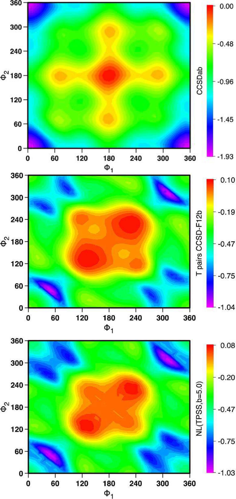
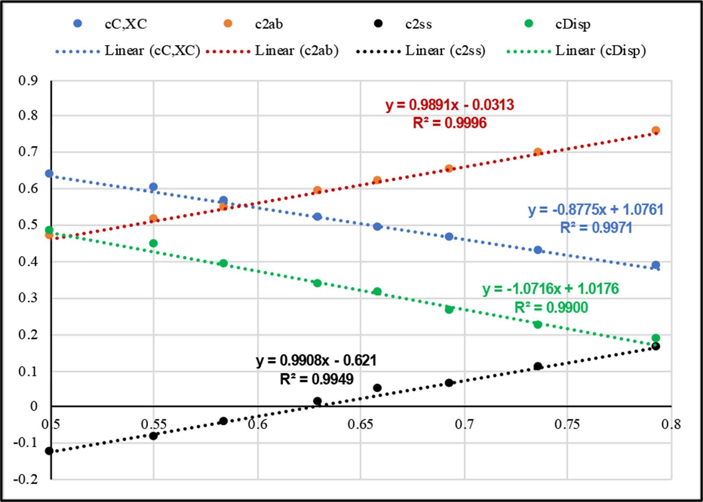
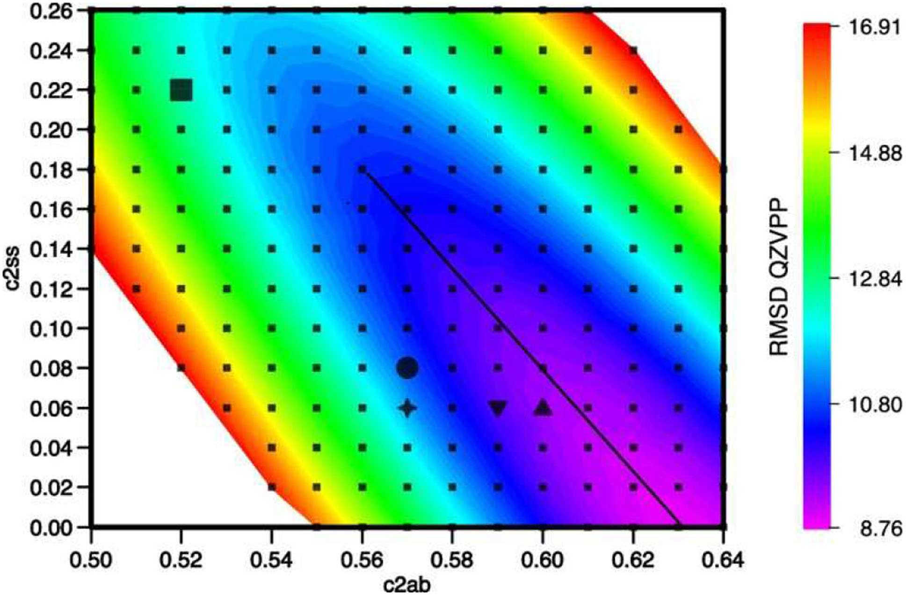

Ringkasan Eksekutif untuk Peneliti (4 Pilar Konseptual)
1. Dikotomi Klasik WFT vs DFT dan Posisi Anak Tangga ke-5: Teori fungsi gelombang (WFT) berkonvergen sistematis menuju batas eksak namun terhambat penskalaan komputasi masif O(N⁷) untuk CCSD(T). Sebaliknya, DFT standar semi-lokal murah namun kerap terjebak galat swa-interaksi dan kegagalan dispersi. Fungsional double-hybrid (DH-DFT) menduduki anak tangga ke-5 Tangga Jacob, memadukan pertukaran eksak Hartree-Fock dan korelasi perturbatif orde dua (PT2) dari orbital virtual Kohn-Sham ke dalam kerangka fungsional semi-lokal.
2. Redundansi Fisika Korelasi Same-Spin dan Fondasi DSD: Analisis mendalam permukaan energi potensial membuktikan bahwa korelasi same-spin MP2 membawa informasi fisika yang bertumpang tindih dengan koreksi dispersi jarak menengah-jauh. Keluarga fungsional DSD (dispersion-corrected, spin-component-scaled, double hybrids) mengurai koefisien opposite-spin (c2ab) dan same-spin (c2ss) secara independen, membebaskan DH-DFT dari ketergantungan sempit pada korelasi LYP dan membuka jalan bagi integrasi koreksi dispersi D3(BJ) maupun D4.
3. Rekalibrasi Robust revDSD pada Tolok Ukur Masif GMTKN55: Berbeda dari parametrisasi awal berbasis dataset kecil yang rentan bias bobot, varian revisi (revDSD dan revDOD) dilatih secara simultan melintasi 2.459 titik energi pada himpunan data komprehensif GMTKN55. Hasilnya, fungsional seperti revDSD-PBEP86-D4 membukukan WTMAD2 spektakuler sebesar 2.33 kcal/mol (dan 2.26 kcal/mol untuk xrevDSD), bersaing ketat dengan fungsional kombinatorik berparameter rumit seperti ωB97M(2) hanya dengan berbekal 5 hingga 6 parameter linear.
4. Efisiensi Skalabilitas dan Transferabilitas Lintas Sifat Molekular: Pemanfaatan aproksimasi Density Fitting (RI-MP2) mereduksi waktu langkah PT2 menjadi kurang dari sepertiga total biaya CPU. Varian revDOD (bebas same-spin) terbukti sangat ampuh mengatasi hambatan reaksi organometalik pada tolok ukur MOBH35 (MAD 1.4 kcal/mol) di mana korelasi same-spin kerap bersifat toksik. Fungsional ini juga membuktikan keunggulan murni pada frekuensi getaran harmonik (RMSD 11 cm⁻¹ tanpa penskalaan) serta pergeseran kimia NMR GIAO.
1. Paradoks Teori Struktur Elektronik: Tangga Jacob DFT dan Kemunculan Double-Hybrid
Dalam lanskap kimia kuantum modern, pemodelan struktur elektronik bertumpu pada dua tiang penyangga utama: teori berbasis fungsi gelombang (wavefunction-based ab initio theory, WFT) dan teori fungsional kerapatan (density functional theory, DFT). Metode WFT menawarkan jalur konvergensi matematis yang terdefinisi secara ketat menuju solusi eksak persamaan Schrödinger non-relativistik. Melalui hierarki teori perturbasi Møller-Plesset (MP2), coupled cluster dengan eksitasi tunggal dan ganda (CCSD), hingga standar emas komputasi CCSD(T), WFT mampu mencapai akurasi kimiawi mutlak (kurang dari 1 kcal/mol). Namun, keberhasilan ini ditebus dengan biaya komputasi yang mencekik: penskalaan waktu CPU sebesar O(N⁷) terhadap ukuran sistem N membatasi penerapan kanonikal CCSD(T) hanya pada molekul-molekul berukuran sangat kecil.
Sebaliknya, DFT menghadirkan efisiensi penskalaan sistem yang jauh lebih ramah (umumnya O(N³) hingga O(N⁴)), menjadikannya instrumen kerja paling populer untuk eksplorasi reaksi kimia berukuran sedang hingga makromolekul hayati. Akan tetapi, efisiensi ini dibayar dengan ketidaktahuan fundamental: fungsional pertukaran-korelasi (exchange-correlation, XC) eksak tidak diketahui secara analitik. Fenomena ini memicu proliferasi ratusan fungsional aproksimasi yang dijuluki oleh John P. Perdew sebagai the functional zoo.
Guna menertibkan belantara fungsional tersebut, Perdew pada tahun 2001 merumuskan metafora alkitabiah yang sangat terkenal: Tangga Jacob DFT (Jacob’s Ladder of DFT, Kejadian 28:10–12). Tangga ini membentang dari bumi yang fana—diumpamakan sebagai pendekatan Hartree murni tanpa korelasi dan pertukaran elektron—menuju surga fisis berupa fungsional XC eksak yang memuat seluruh interaksi kuantum banyak-tubuh tanpa cacat.

Anak tangga 1 sampai 3 merepresentasikan fungsional semi-lokal. Pada anak tangga ke-4, fungsional hibrida global (seperti B3LYP dan PBE0) serta hibrida terpisah-jarak (range-separated hybrids, RSH seperti CAM-B3LYP dan ωB97X-V) memasukkan fraksi pertukaran eksak Hartree-Fock (HF) yang dihitung dari orbital-orbital molekul terisi (occupied orbitals). Namun demikian, fungsional anak tangga ke-4 tetap mengalami keterbatasan intrinsik dalam menangani gaya dispersi jarak jauh dan eksitasi korelasi dinamis kompleks.
Puncak tertinggi hierarki fungsional kontemporer dihuni oleh Anak Tangga ke-5: Fungsional Double-Hybrid (DH-DFT). Pada tingkatan ini, untuk pertama kalinya orbital-orbital virtual tak-terisi (unoccupied/virtual orbitals) dilibatkan secara eksplisit guna menghitung korelasi non-lokal melalui teori perturbasi orde dua (PT2) gaya Møller-Plesset atau aproksimasi fase acak langsung (dRPA). Stefan Grimme pada tahun 2006 memelopori paradigma ini secara praktis melalui fungsional B2PLYP. Kehadiran double-hybrid menghadirkan Jalan Ketiga (A Third Way): memadukan kekokohan termodinamika fungsional semi-lokal pada jarak pendek dengan presisi teori perturbasi fungsi gelombang pada jarak menengah dan jauh, menembus batas presisi yang selama ini mustahil dicapai oleh fungsional hibrida konvensional.
2. Formulasi Matematika Fungsional DSD dan Dekonvolusi Korelasi Spin
Secara matematis dan prosedural, evaluasi fungsional double-hybrid dieksekusi dalam dua tahapan komputasi yang terpisah secara runtut:
Tahap Pertama (Penyelesaian Persamaan Mandiri Kohn-Sham): Himpunan orbital molekul Kohn-Sham (KS) diperoleh melalui perhitungan swa-konsisten (Self-Consistent Field, SCF) menggunakan fungsional energi perantara yang memuat fraksi pertukaran HF parsial dan korelasi semi-lokal:
Tahap Kedua (Evaluasi Energi Double-Hybrid Pasca-SCF): Berkas orbital Kohn-Sham yang telah konvergen dari Tahap 1 kemudian digunakan untuk mengevaluasi energi total akhir fungsional double-hybrid, yang memadukan komponen pertukaran eksak, korelasi semi-lokal, suku korelasi perturbatif non-lokal (PT2), serta koreksi dispersi empiris:
Dalam fungsional double-hybrid sederhana rintisan Grimme (B2PLYP), nilai koefisien korelasi perturbatif dibatasi secara kaku oleh konstrain simetri spin konvensional: c2ss = c2ab = c2 = 0.27, dipadukan secara eksklusif dengan korelasi semi-lokal Lee-Yang-Parr (LYP) dan pertukaran Becke 88 (B88). Namun, penelitian lanjutan oleh Sebastian Kozuch dan Jan M. L. Martin mengungkap anomali mendasar: fungsional B2PLYP hanya bekerja baik karena sifat spesifik model Colle-Salvetti yang mendasari korelasi LYP, di mana energi korelasi gas elektron seragam terpolarisasi spin penuh lenyap secara artifisial.
Lebih krusial lagi, Martin dan rekan-rekan membuktikan adanya redundansi fisika antara korelasi same-spin dan dispersi van der Waals. Sebagaimana divisualisasikan pada pemetaan permukaan torsi n-pentana pada Gambar 2, kontur permukaan energi korelasi same-spin CCSD memiliki topologi dan pola kelengkungan yang persis identik dengan potensial dispersi empiris non-lokal.

Temuan revolusioner ini melahirkan rumpun fungsional DSD (Dispersion-corrected, Spin-component-scaled, Double hybrids). Dengan melepaskan belenggu konstrain simetri c2ss = c2ab, optimasi bebas menunjukkan bahwa rasio optimal c2ss / c2ab untuk korelasi GGA PBE adalah 0.12 / 0.53, dan untuk BP86 adalah 0.24 / 0.49. Artinya, sebagian besar korelasi perturbatif same-spin dapat diredam karena fungsinya telah diemban secara jauh lebih akurat dan murah oleh suku dispersi empiris seperti Grimme D3(BJ) atau D4. Fleksibilitas ini membebaskan double-hybrid dari keterikatan sempit pada korelasi LYP, membuka jalan bagi fungsional unggulan seperti DSD-PBEP86 yang secara dramatis mengungguli pendahulunya.
3. Reparametrisasi Komprehensif revDSD dan Evaluasi Benchmark Masif GMTKN55
Generasi awal fungsional DSD (seperti DSD-PBEP86 dan DSD-BLYP yang dirilis pada tahun 2011) dikalibrasi menggunakan himpunan data pelatihan yang relatif terbatas, mencakup entalpi atomisasi W4-08, energi aktivasi reaksi DBH24, dan interaksi non-kovalen S22. Keterbatasan diversitas kimiawi ini menimbulkan hipersensitivitas bobot pada sistem logam transisi (seperti adisi oksidatif paladium) serta dimer gas mulia, memunculkan kekhawatiran bahwa fungsional tersebut hanya sekadar mencocokkan titik-titik sampel sempit (fitting round pegs to square holes).
Untuk membangun fungsional yang memiliki ketahanan kimiawi sejati (chemical robustness), Jan M. L. Martin dan Golokesh Santra melakukan reparametrisasi menyeluruh pada tolok ukur termokimia paling masif dan heterogen di dunia: GMTKN55 (General Main-group Thermochemistry, Kinetics, and Noncovalent interactions database) yang dikembangkan oleh Grimme, Goerigk, dan kawan-kawan. GMTKN55 memuat 1.500 perbedaan energi unik yang terdistribusi melintasi 55 subset kimiawi dan membutuhkan 2.459 kalkulasi titik-tunggal berakurasi tinggi dengan basis set def2-QZVPPD.
Kinerja fungsional dievaluasi menggunakan statistik deviasi mutlak terbobot tipe 2 (WTMAD2), di mana galat rata-rata dinormalisasi terhadap skala energi masing-masing subset (56.84 kcal/mol / |ΔE|i) agar energi interaksi non-kovalen yang kecil tidak tertelan oleh besarnya entalpi atomisasi. Tabel 1 merangkum perbandingan kinerja termokimia lintas anak tangga Tangga Jacob.
| Fungsional XC | Rung | WTMAD2 Total | Termokimia | Barrier Height | Non-Kovalen | MOBH35 MAD |
|---|---|---|---|---|---|---|
| ωB97M(2) (RSH-DH) | 5 | 2.19 | 0.44 | 0.26 | 0.49 | 1.9 |
| xrevDSD-PBEP86-D4 | 5 | 2.26 | 0.56 | 0.27 | 0.47 | — |
| revDSD-PBEP86-D4 | 5 | 2.33 | 0.56 | 0.31 | 0.48 | 1.5 |
| revDOD-PBEP86-D4 (Bebas Same-Spin) | 5 | 2.36 | 0.59 | 0.30 | 0.47 | 1.4 |
| revDSD-PBEP86-D3(BJ) | 5 | 2.42 | 0.54 | 0.31 | 0.57 | 1.7 |
| DSD-PBEP86-D3(BJ) (Original) | 5 | 3.10 | 0.55 | 0.45 | 0.97 | 2.2 |
| B2GP-PLYP-D3 | 5 | 3.19 | 0.63 | 0.42 | 0.85 | 2.3 |
| B2PLYP-D3 (Grimme 2006) | 5 | 3.90 | 0.79 | 0.63 | 0.78 | 3.0 |
| ωB97M-V (Terbaik Rung 4 - RSH mGGA) | 4 | 3.29 | 0.73 | 0.45 | 0.57 | 1.7 |
| M06-2X (Global Hybrid mGGA) | 4 | 4.79 | 0.86 | 0.48 | 1.14 | 3.1 |
| B3LYP-D3 (Standar Industri) | 4 | 6.50 | 1.31 | 1.14 | 1.24 | 3.8 |
| SCAN-D3 (Terbaik Rung 3 - mGGA) | 3 | 7.95 | 1.67 | 1.95 | 1.73 | 3.8 |
| PBE-D3 (Standar Rung 2 - GGA) | 2 | 10.44 | 2.09 | 2.41 | 2.05 | 4.7 |
| SPW92 (Rung 1 - LDA) | 1 | 22.67 | 4.46 | 4.05 | 6.12 | 7.1 |
Data pada Tabel 1 menyajikan kesimpulan empiris yang sangat gamblang: revDSD-PBEP86-D4 membukukan WTMAD2 sebesar 2.33 kcal/mol, memangkas galat fungsional hibrida standar B3LYP-D3 hingga hampir tiga kali lipat dan melampaui seluruh fungsional anak tangga ke-4 (termasuk ωB97M-V pada 3.29 kcal/mol dan M06-2X pada 4.79 kcal/mol). Peningkatan ini diraih dengan menerapkan model koreksi dispersi D4 mutakhir karya Caldeweyher dan Grimme yang memasukkan ketergantungan muatan parsial atomik dinamis dan interaksi non-lokal 3-tubuh Axilrod-Teller-Muto (ATM).
Yang paling memukau dari perspektif filosofi kimia kuantum, fungsional revDSD hanya membutuhkan 6 parameter empiris yang terjustifikasi secara fisik. Fungsional kombinatorik ωB97M(2) memang mencatat WTMAD2 sedikit lebih rendah (2.19 kcal/mol), namun selisih sebesar 0.07 kcal/mol tersebut berada jauh di dalam batas ketidakpastian eksperimental naskah acuan dan harus dibayar mahal dengan keterlibatan 16 parameter fitting yang kompleks.
4. Akselerasi Komputasi, Reduksi Penskalaan, dan Varian DOD Bebas Same-Spin
Keberatan utama yang kerap dilontarkan terhadap adopsi luas fungsional double-hybrid adalah beban komputasinya yang dianggap setara dengan MP2 formal O(N⁵). Martin dan Santra menepis anggapan ini melalui analisis rincian alokasi waktu komputasi (profiling) pada kode modern.
Dengan menerapkan teknik resolusi identitas / pencocokan kerapatan (Resolution of the Identity / Density Fitting, RI-MP2), langkah evaluasi integral transformasi empat-pusat dua-elektron dapat dipercepat secara drastis. Pada molekul berukuran kecil hingga sedang, tahap RI-MP2 hanya mengonsumsi persentase satu digit (kurang dari 10%) dari total waktu eksekusi CPU; bahkan untuk molekul raksasa seperti isomer fulerena C60, porsi RI-MP2 mentok di kisaran 25–30%. Artinya, mayoritas waktu komputasi tetap didominasi oleh konvergensi matriks Fock iteratif SCF yang merupakan beban baku perhitungan DFT biasa.
Kendati demikian, untuk mendorong komputasi menuju skala polimer dan sistem supra-molekular, pemangkasan penskalaan integral virtual tetap menjadi prioritas. Tiga terobosan algoritma mutakhir dibedah secara komparatif:
- Orbital Alami Pasangan Terlokalisasi (DLPNO-MP2): Dikembangkan oleh Frank Neese dan Edward Valeev, pendekatan ini melokalisasi ruang orbital virtual sehingga penskalaan asimtotik tereduksi tajam menjadi O(N) linier.
- Transformasi Laplace SOS-MP2: Mengeliminasi korelasi same-spin dan mengevaluasi murni suku opposite-spin dalam skala waktu O(N⁴) tanpa membutuhkan lokalisasi orbital.
- Tensor Hypercontraction (THC): Inovasi terbaru Song dan Martinez yang memfaktorisasi tensor integral Coulomb dua-elektron, mereduksi formalitas korelasi menjadi O(N³).
Peluang percepatan ini mendorong perumusan varian DOD (Dispersion-corrected, Opposite-spin-scaled, Double hybrids), di mana koefisien same-spin disetel nol secara absolut (c2ss = 0). Dengan menghilangkan evaluasi integral same-spin yang boros memori, varian revDOD-PBEP86-D4 mempertahankan akurasi prima pada GMTKN55 (WTMAD2 2.36 kcal/mol, hanya berselisih 0.03 kcal/mol dari revDSD) hanya dengan mengandalkan 5 parameter linear tunggal.

Keteraturan transferabilitas ini terkonfirmasi secara meyakinkan pada Gambar 3. Ketika fraksi pertukaran HF divariasikan dari 0.50 hingga 0.80 pada kerangka meta-GGA SCAN, parameter korelasi perturbatif dan dispersi berevolusi secara linier monontonik sempurna dengan R² mendekati 1.00. Fakta empiris ini menegaskan bahwa fungsional double-hybrid berbasis DSD dan DOD memiliki ketahanan parametrik yang luar biasa, di mana variasi fraksi HF sebesar ±0.05 hampir tidak mengubah kualitas hasil energi akhir.
5. Validasi Melintasi Termokimia: Kompleks Organologam MOBH35, Frekuensi Harmonik, dan Respon NMR
Ujian sejati bagi fungsional komputasi teoretis adalah kemampuannya memprediksi sifat-sifat fisis yang tidak pernah disertakan sama sekali selama proses kalibrasi parameter (unseen properties & out-of-domain transferability). Martin dan Santra menguji keandalan ini pada tiga ranah krusial: kinetika organologam, kelengkungan permukaan energi potensial getaran, dan sifat respon magnetik NMR.
Tantangan Kinetika Reaksi Organologam (Tolok Ukur MOBH35): Kompleks logam transisi kerap diwarnai korelasi statis (near-degeneracy orbital d) yang dapat merusak kestabilan penyebut orbital pada teori perturbasi PT2. Pada tolok ukur 35 reaksi organometalik realistis MOBH35 karya Iron dan Janes, fungsional semi-lokal anak tangga 1–3 gagal total (Tabel 1). Namun, varian bebas same-spin revDOD-PBEP86-D4 mencatat kinerja terbaik dari seluruh fungsional anak tangga ke-5 dengan MAD sebesar 1.4 kcal/mol (dan turun hingga 1.2 kcal/mol melalui ekstrapolasi basis set def2-QZVPP).
Pembedahan mekanistik membuktikan bahwa korelasi same-spin MP2 bersifat “beracun” (poisonous) ketika berhadapan dengan sistem yang memiliki korelasi statis parsial: pada pemodelan katalis hidrogenasi rutenium Milstein, RMSD metode MP2 standar melonjak hingga 9.5 kcal/mol, sedangkan SOS-MP2 (murni opposite-spin) mampu menekan galat hingga 5.4 kcal/mol, bahkan lebih unggul dari CCSD standar (6.0 kcal/mol). Inilah alasan fisis mengapa revDOD mengungguli revDSD pada kimia organologam.

Presisi Frekuensi Harmonik & Anharmonik (HFREQ27): Apakah akurasi termodinamika yang tinggi diraih dengan mengorbankan kurvatur permukaan energi potensial (PES)? Gambar 4 membuktikan kebalikannya. Pada tolok ukur spektroskopi resolusi tinggi HFREQ27, metode MP2 standar memiliki RMSD 30 cm⁻¹, PBE0 32 cm⁻¹, dan B3LYP 25 cm⁻¹. Sebaliknya, fungsional DSD-PBEP86 dan revDSD-PBEP86 mencapai akurasi luar biasa sebesar 11 cm⁻¹ secara murni tanpa membutuhkan faktor koreksi skala empiris. Formulasi ini memungkinkan perhitungan anharmonik tingkat lanjut via teori perturbasi rovibrasional orde dua (VPT2) menggunakan medan gaya kuartik semi-diagonal metode Schneider-Thiel.
Konstanta Perisai Kimia NMR (GIAO-CSCs): Dalam spektroskopi resonansi magnet inti, implementasi Gauge-Including Atomic Orbitals (GIAO) pada paket ORCA membuktikan bahwa DSD-PBEP86-D3(BJ) menorehkan galat relatif rata-rata (Mean Absolute Relative Error, MARE) hanya sebesar 1.9% terhadap data acuan CCSD(T), mengungguli MP2 (4.1%), SCS-MP2 (3.9%), serta fungsional meta-GGA M06-L (5.4%) dan TPSS (6.4%). Digabungkan dengan integrasi RI-MP2 dan aproksimasi rantai bola (Chain of Spheres, RIJCOSX), kalkulasi pergeseran kimia NMR berpresisi tinggi kini sanggup menjangkau molekul raksasa hingga 400 elektron pada komputer kerja standar.
6. Komparasi Terhadap Metode WFT Komposit, Batasan Korelasi Statis, dan Prospek ‘Jalan Ketiga’
Pencapaian WTMAD2 di kisaran 2.2 – 2.3 kcal/mol pada GMTKN55 menimbulkan pertanyaan fundamental: sejauh mana akurasi fungsional double-hybrid anak tangga ke-5 ini mampu menandingi protokol termokimia fungsi gelombang komposit ab initio berbiaya raksasa?
Pada evaluasi 642 energi reaksi termokimia molekul kecil hingga sedang (unsur H sampai Kr) yang dibandingkan secara serempak, protokol komposit penuh Gaussian-4 (G4) mencatat WTMAD2 sebesar 1.76 kcal/mol. Varian berbiaya lebih hemat seperti G4MP2 mencatat 2.29 kcal/mol, G3B3 membukukan 2.20 kcal/mol, dan CBS-QB3 berada pada angka 2.25 kcal/mol. Sementara itu, fungsional double-hybrid teratas seperti xrevDSD-PBEP86-D4 dan ωB97M(2) mencatat deviasi masing-masing 1.95 – 2.1 kcal/mol pada subhimpunan yang sama.
Fakta ini menandai tonggak sejarah baru dalam kimia komputasi: fungsional double-hybrid telah resmi memasuki domain presisi metode komposit WFT, namun dengan biaya komputasi yang jauh lebih murah, penskalaan ukuran sistem yang jauh lebih jinak, serta ketersediaan turunan analitik gradien energi pertama dan kedua yang sangat efisien untuk optimasi geometri dan perhitungan frekuensi.
Kelemahan paling kritis dari seluruh fungsional double-hybrid berbasis PT2 terletak pada penyebut selisih energi orbital (ε_i − ε_a). Pada sistem dengan celah pita mendekati nol atau kuasi-degenerasi mutlak (korelasi statis Tipe A, seperti radikal singlet biradikaloid, klaster logam valensi campuran, atau disosiasi ikatan kovalen ganda), penyebut PT2 akan meledak menuju nol, menghasilkan energi korelasi yang divergen secara katastrofik.
Penelitian terkini mengeksplorasi dua jalan keluar: (1) Orbital-Optimized Double Hybrids (OO-DH): Merelaksasi orbital Kohn-Sham secara langsung terhadap energi MP2 guna memitigasi kontaminasi spin radikal; (2) dRPA-Based Double Hybrids (seperti dRPA75-D3BJ dan PWPRPA): Menggantikan perturbasi MP2 dengan aproksimasi fase acak langsung (direct Ring Coupled Cluster with Doubles, drCCD) yang secara alami invarian terhadap singularitas celah pita nol dan memberikan deskripsi dispersi jarak jauh yang sangat kokoh.
Sebagai refleksi penutup, Jan M. L. Martin dan Golokesh Santra menegaskan bahwa perdebatan puluhan tahun antara mazhab fungsional murni non-empiris (ala Perdew) melawan mazhab parametrisasi radikal dengan puluhan variabel fleksibel (ala Truhlar M06/MN15) sejatinya merupakan sebuah dikotomi palsu (false dichotomy).
Keluarga fungsional double-hybrid empiris seperti revDSD dan revDOD mewakili sintesis jalan tengah yang paling elegan dan pragmatis: membuktikan bahwa dengan berpijak pada pemahaman fisika kuantum yang jernih—memisahkan korelasi spin, mengeliminasi redundansi dispersi, dan mengkalibrasi parameter linear minimal (5–6 parameter) pada tolok ukur termodinamika masif—kita dapat menghadirkan instrumen komputasi presisi ultra-tinggi yang menjembatani keindahan fungsional kerapatan dengan ketelitian fungsi gelombang ab initio bagi komunitas kimia dunia.
Martin, J. M. L., & Santra, G. (2020). Empirical Double-Hybrid Density Functional Theory: A ‘Third Way’ in Between WFT and DFT. Israel Journal of Chemistry, 60(8-9), 787–804. https://doi.org/10.1002/ijch.201900114